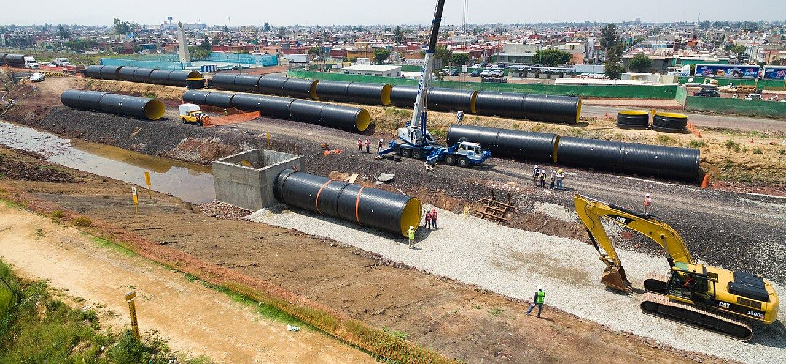
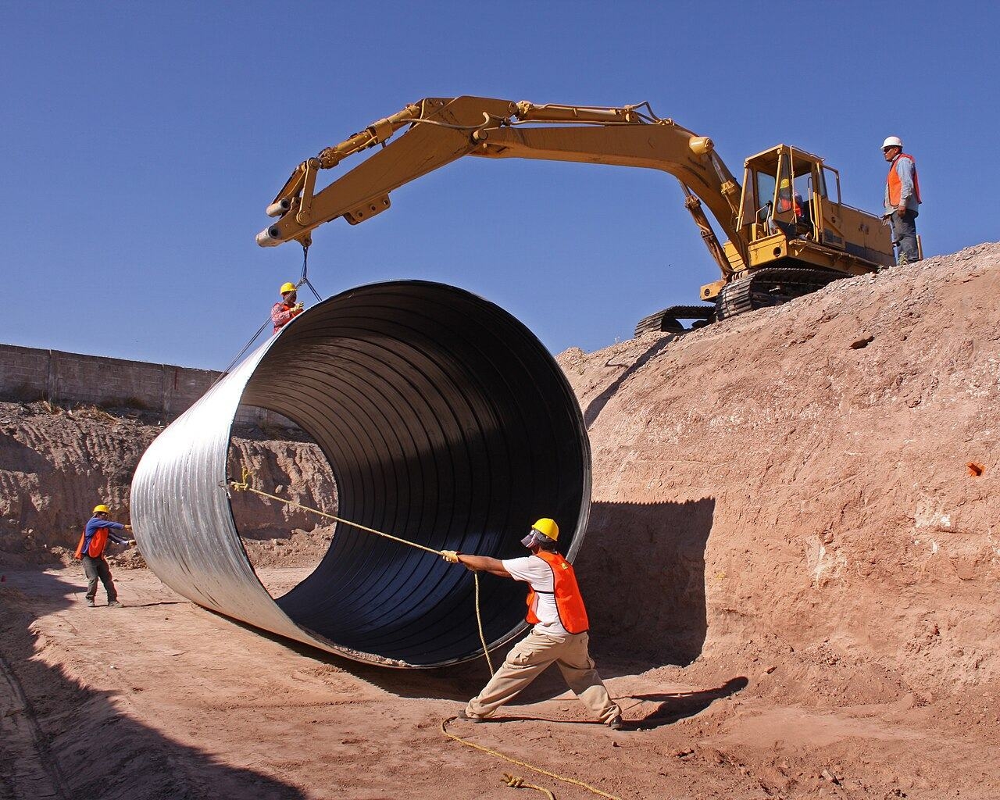
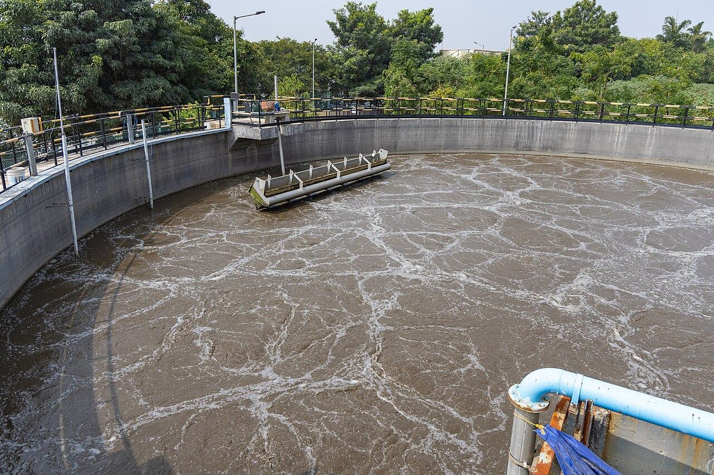

Palplanş iksa
Çakma, söküm, kiralama ve satış. Derin kazılarda toprak ve suyu tutan çelik perdeler.
İnceleSu ve kanalizasyon hatları
İçme suyu isale hatları, kanalizasyon ve yağmursuyu şebekeleri, kanal görüntüleme.
İnceleArıtma tesisleri
Atık su ve içme suyu arıtma tesisleri, terfi istasyonları ve su depoları.
İncele

Altyapı inşaatında mühendislik ve uygulama tek çatı altında
Han Grup Yazılım İnşaat; palplanş iksa sistemlerinden içme suyu isale hatlarına, kanalizasyon ve yağmursuyu şebekelerinden arıtma tesislerine uzanan altyapı işlerinde yüklenici olarak hizmet verir. Projeyi fizibilite aşamasından alır, uygular ve çalışır halde teslim eder.
Kazıdan devreye almaya altyapının her kalemi



Her proje üç aşamada ilerler
Fizibilite ve projelendirme
Sahayı yerinde inceler; zemin, yeraltı suyu ve mevcut hat verilerine göre uygun sistemi seçeriz. Metraj, iş programı ve uygulama projeleri bu aşamada hazırlanır, teklif kalem kalem sunulur.
Uygulama
Kazı ve iksa, boru serimi, betonarme ve montaj işleri deneyimli saha ekibiyle yürütülür. Her şantiyede iş sağlığı ve güvenliği kuralları ile iş programı birlikte takip edilir.
Devreye alma ve teslim
Basınç, sızdırmazlık ve performans testleri yapılır; sistem çalışır halde teslim edilir. İşletme personeline eğitim verilir, as-built projeler eksiksiz sunulur.
Örnek uygulamalar

Kurumsal
Altyapı işlerinde güvenilir yüklenici
Han Grup Yazılım İnşaat, altyapı inşaatının zorlu saha koşullarında mühendislik bilgisini uygulama deneyimiyle birleştirir. Palplanş iksa sistemleri, içme suyu isale hatları, kanalizasyon ve yağmursuyu şebekeleri, kanal hattı görüntüleme, atık su ve içme suyu arıtma tesisleri başlıca çalışma alanlarımızdır.
Kamu kurumları, belediyeler ve özel sektör yatırımcıları için yürüttüğümüz işlerde hedefimiz aynıdır: işi sözleşmedeki sürede, bütçede ve kalitede, kazasız tamamlamak.
Misyonumuz
Altyapı inşaatının zorlu koşullarında; güçlü teknik kadro, doğru ekipman ve disiplinli saha yönetimiyle kalıcı değer üretmek.
Vizyonumuz
Palplanş iksa ve su altyapısı alanında ilk akla gelen, nesiller boyu sürecek seçkin bir kuruluş olmak.
İşimizi hangi ilkelerle yapıyoruz
İş sağlığı ve güvenliği
Her şantiyede risk analizi yapılır, ekip eğitilir ve denetlenir. Hedefimiz sıfır iş kazasıdır.
Çevre
Doğal kaynakları verimli kullanır, kazı ve atık yönetimini mevzuata uygun yürütür, sahayı temiz teslim ederiz.
Kalite ve iş prensibi
İmalatlar proje ve şartnameye göre kontrol edilir. Müşteri bilgileri gizli tutulur, taahhüt edilen süre ve bütçeye uyulur.
Keşiften devreye almaya dört adım
Keşif ve fizibilite
Saha, zemin ve mevcut hat koşulları yerinde incelenir.
Proje ve teklif
Uygulama projeleri ve metraj hazırlanır, net teklif sunulur.
Uygulama
İş programına ve güvenlik kurallarına uygun imalat yapılır.
Devreye alma
Testler, eğitim ve as-built dokümanlarıyla teslim edilir.

Faaliyet Alanları
Zemine ve çevreye göre doğru yöntem
Vibrasyonlu çakma
Ekskavatöre monte veya vinç askılı vibro çekiçlerle, kumlu ve gevşek zeminlerde hızlı çakım.
Hidrolik baskı
Titreşime ve gürültüye hassas kent içi işlerde, komşu yapıları etkilemeden sessiz sürme.
Ön delgili çakma
Sert zeminlerde burgu ile ön delgi yapılarak profilin proje kotuna hasarsız indirilmesi.
Söküm, kiralama, satış
İş bitiminde söküm; proje süresine göre U ve Z tipi palplanş kiralama, satış ve geri alım.
Merak edilenler
Galeri
Görseller temsilidir; kaynakları sayfanın altında listelenmiştir.